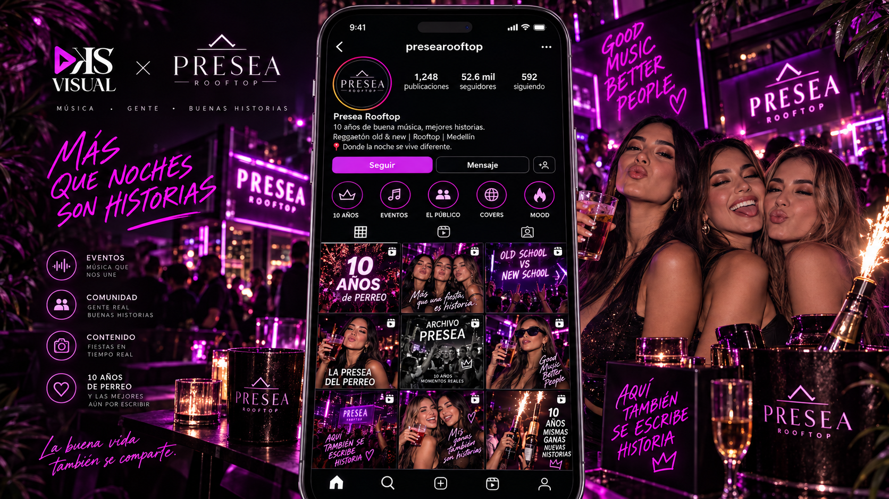

Presea Rooftop:
10 años de reggaetón, recuerdos y comunidad.
Esta demo reemplaza el PowerPoint por una experiencia navegable. La propuesta muestra cómo se sentiría la campaña en cada red social, cómo se verían los posts individuales y cómo convertiríamos interacciones en reservas, comunidad y recompra.

Más que una fiesta, son historias.
La campaña mezcla dos territorios: nostalgia y vigencia cultural. Presea no se vende solo como una discoteca, sino como un lugar donde distintas generaciones del reggaetón han vivido momentos memorables.
Lo que mueve la conversación.
1. Nostalgia: recuerdos, primeros perreos, fotos, archivo y comparaciones 2016 → 2026.
2. Comunidad: los asistentes como protagonistas, concursos, UGC, “La Presea del Perreo”.
3. Conversión: reservas, mesas, covers, fechas especiales y remarketing por WhatsApp.
Así se ve la propuesta por canal.
Cada página está maquetada como si estuviéramos navegando la red social y contiene posts individuales con copy y hashtags.


Ruta táctica sugerida para el primer mes.
Video manifesto + carrusel “10 años de perreo” + evento ancla + activación del hashtag.
Encuestas old school vs new school, recuerdos de asistentes, duetos, comentarios y UGC.
Leads por DM, link de WhatsApp, reservas de mesas y segmentación por interés.
Postevento, álbumes, highlights, base de datos, remarketing y beneficios para quienes vuelven.
De la emoción a la reserva.
Además del componente visual, la propuesta integra un flujo simple de CRM para convertir audiencia en clientes frecuentes.
Recomendación para mañana: GitHub Pages.
Como este sitio es estático, lo más rápido es subir la carpeta completa a GitHub y activar Pages. También funciona en Netlify o Firebase Hosting, pero GitHub Pages es el más inmediato para compartir un link en minutos.
- 1. Crear repositorio nuevo en GitHub
- 2. Subir el contenido de esta carpeta
- 3. En Settings → Pages → Deploy from branch
- 4. Seleccionar branch main y carpeta /root
- 5. Esperar el link público
Entregable de esta demo.
Queda un micrositio con:
- Página principal con narrativa estratégica.
- Página de Instagram con feed de posts individuales.
- Página de TikTok con videos/creativas individuales.
- Página de Facebook con evento y comunidad.
- Página de embudo CRM con ruta de conversión.
Si quieres, después de subirlo, puedes renombrar el repo como ksvisual-presea y compartir el enlace final a primera hora.